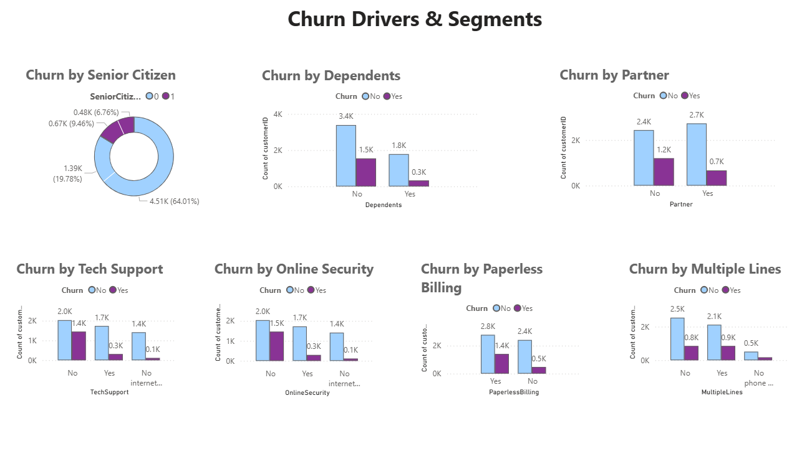
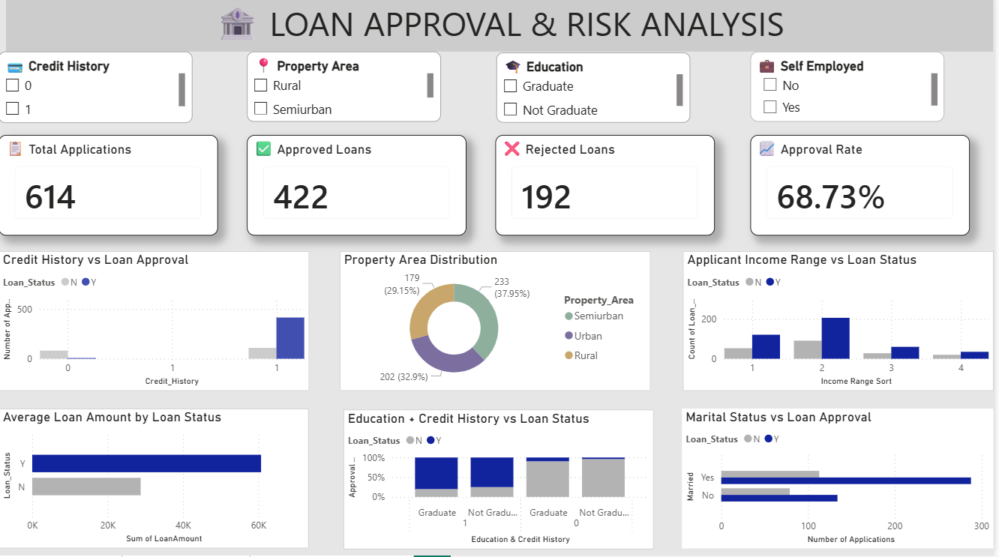
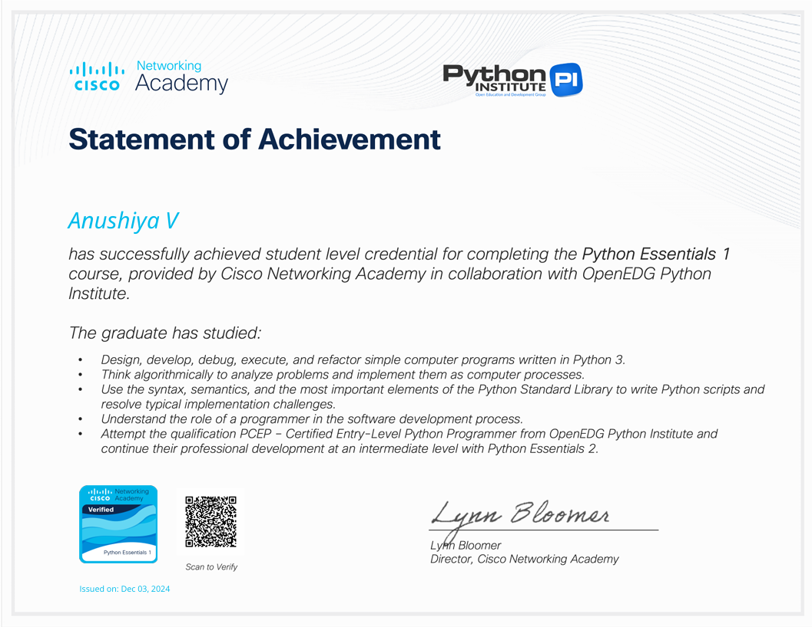
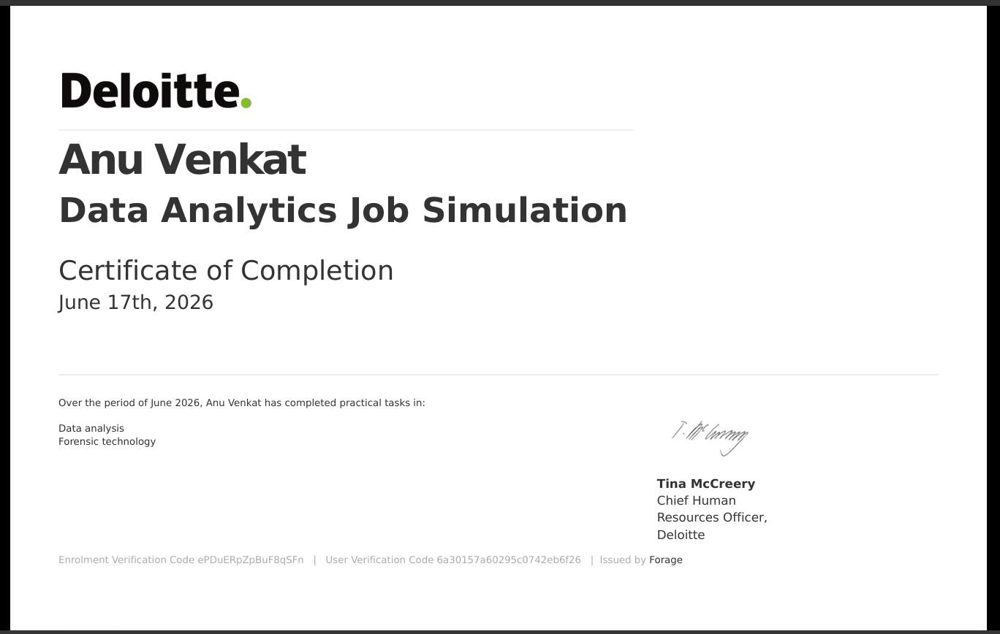
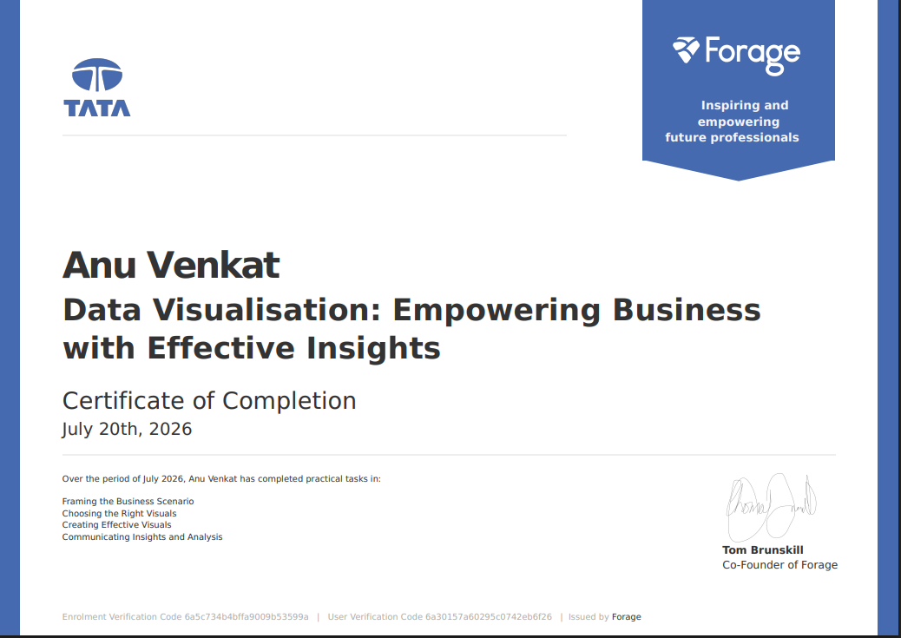

Programming
- Python
Aspiring Data Analyst
I clean messy data, query it with SQL, and turn it into Power BI dashboards that explain what is happening and why.
The tools I use to clean, analyse and present data.
I am an aspiring Data Analyst with an Information Technology background. I enjoy data analysis, data cleaning, writing SQL queries, and building interactive dashboards.
I have worked on projects using Excel, SQL, and Power BI, and I keep improving my technical skills by building something new with each project.
A selection of my data analytics work. Each project links to its GitHub repository.

Main project
An end-to-end analytics project that explores customer churn patterns, identifies factors associated with customer attrition, and presents insights through interactive Power BI dashboards.

An analytics project that explores applicant information and identifies patterns associated with loan approval decisions through data cleaning, SQL analysis, and Power BI visualizations.

A retail sales analysis project focused on exploring sales performance, identifying trends, and presenting business insights using Excel.

An end-to-end analytics project focused on exploring supply chain performance, delivery risks, and inventory-related business insights.
Repository will be added once the project is complete.
June to July 2026
CodeAlpha
June 2026
Deloitte, via Forage

Cisco Networking Academy
Cisco Networking Academy

Forage

Virtual Job Simulation, Forage
PGP Educational Institutions / PGP College of Engineering and Technology, Namakkal
CGPA: 8.16
Expected graduation: 2027
I am looking for entry-level Data Analyst opportunities. The quickest way to reach me is LinkedIn, and you can see my work on GitHub.